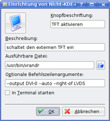

RandR
Dieser Artikel wurde für die folgenden Ubuntu-Versionen getestet:
Ubuntu 16.04 Xenial Xerus
Zum Verständnis dieses Artikels sind folgende Seiten hilfreich:
 RandR steht für "Resize and Rotate" und dient bereits ab Ubuntu 8.10 als Standardwerkzeug zur Konfiguration von Grafikkarten und Bildschirmauflösungen. Der moderne XServer erkennt viele Monitore beim Anstecken an die Grafikkarte automatisch und passt die Konfiguration dynamisch an. Über RandR lässt sich die Auflösung mehrerer angeschlossener Monitore bzw. Beamer sowie ein erweiterter Desktop recht einfach konfigurieren. Darüber hinaus kann man die evtl. vorhandene Pivot-Funktion eines Bildschirms nutzen.
RandR steht für "Resize and Rotate" und dient bereits ab Ubuntu 8.10 als Standardwerkzeug zur Konfiguration von Grafikkarten und Bildschirmauflösungen. Der moderne XServer erkennt viele Monitore beim Anstecken an die Grafikkarte automatisch und passt die Konfiguration dynamisch an. Über RandR lässt sich die Auflösung mehrerer angeschlossener Monitore bzw. Beamer sowie ein erweiterter Desktop recht einfach konfigurieren. Darüber hinaus kann man die evtl. vorhandene Pivot-Funktion eines Bildschirms nutzen.
RandR wird von den freien Grafiktreibern für den XServer in der Regel in vollem Umfang unterstützt. Diese Aussage gilt jedoch nur bedingt für herstellereigene (proprietäre) Treiber. Insbesondere der unfreie Treiber von NVidia-Grafikkarten unterstützt in Versionen älter als Version 304 nur einen älteren RandR-Standard (bzw. neuere nur unvollständig).
Wichtig wird dies bei mehreren Monitoren, da die Konfiguration eines erweiterten Desktops die vollständige Unterstützung von RandR 1.2 voraussetzt, wie sie der herstellereigene Treiber von AMD seit geraumer Zeit bieten kann. Nvidia stellt daher als Alternative das Programm nvidia-settings und für einen erweiterten Desktop den Betriebsmodus TwinView zur Verfügung. Twinview deaktiviert allerdings die RandR-Unterstützung komplett.
Hinweis:
Bildschirm klonen: alle Monitore zeigen das gleiche Bild
Erweiterter Desktop: Verteilung auf zwei oder mehr Monitore (diese zeigen ein unterschiedliches Bild)
Grundlagen¶
Zwischen den ersten Linux-Versionen, wo man die Bildschirmeinstellungen noch direkt in den Kernel kompilieren musste, bis zur Situation in der Gegenwart liegen Welten, was den Konfigurationskomfort angeht. Trotzdem kann das Einrichten mehrerer Bildschirme unter Linux noch immer eine Herausforderung für Einsteiger sein. Wenn die Einrichtung nicht auf Anhieb (automatisch) klappt, ist das auch der Ort, wo der Linux-Schuh nach dem ersten Anziehen am meisten drückt.
In der jüngeren Vergangenheit wurden unter Linux die meisten Problemfälle über das Editieren der Datei /etc/X11/xorg.conf gelöst. Die modernere Variante über RandR hat jedoch mehrere Vorteile: Bildschirmeinstellungen können auch ohne Root-Rechte geändert werden und nicht jede Änderung macht einen Neustart des XServers erforderlich.
Prinzipiell ist in allen Ubuntu-Varianten und Desktop-Umgebungen ein grafisches Werkzeug (GUI) für das Einrichten von Bildschirmen vorhanden. Dieses findet man meist in den "Systemeinstellungen", z.B. unter "Bildschirm". Der Artikel XServer grafisch einrichten hilft bei der Lokalisierung weiter.
Neu angeschlossene Monitore müssen zuerst aktiviert werden. Es kommt leider vor, dass auch nach einem Neustart des Systems die angeschlossenen Monitore nicht erkannt werden. Somit erscheint der zusätzliche Monitor auch nicht in den diversen grafischen Werkzeugen. Erst nach der Aktivierung werden dort alle Monitore sichtbar. Dies geschieht im einfachsten Fall in einem Terminal-Fenster [1] mit dem Befehl:
xrandr --auto
Falls die Konfiguration dann immer noch nicht möglich ist, muss man sich eingehender mit der Materie beschäftigen. Die möglichen Fehlerquellen sind so vielfältig wie die unter Linux betriebene Hardware. Beispielsweise kann es passieren, dass ein Monitor seine technischen Kenndaten nicht wie sonst üblich an das System übermittelt. Oder der zusätzliche Monitoranschluss wurde im BIOS des Geräts deaktiviert. Manchmal tritt auch ein spezielles Problem mit einem proprietären Grafiktreiber auf (siehe auch Problembehebung).
Hilfe zur Selbsthilfe¶
Abfrage der Hardware¶
Falls man Hilfe braucht, sollte man zumindest die aktuelle Situation angemessen beschreiben können. Dazu gehört die Ausgabe des folgenden Befehls, der prüft, ob alle Anschlüsse korrekt erkannt wurden [1]:
xrandr --query
Die Ausgabe sieht beispielsweise so aus:
Screen 0: minimum 320 x 200, current 1280 x 800, maximum 3200 x 1200 VGA-0 disconnected (normal left inverted right) S-video disconnected (normal left inverted right) DVI-0 disconnected (normal left inverted right) LVDS connected 1280x800+0+0 (normal left inverted right) 0mm x 0mm 1280x800 60.2*+ 60.0 1280x768 60.0 1024x768 60.0 800x600 60.3 640x480 59.9
| Beispiele | |
| Bezeichnung | Anschluss |
VGA | analoge VGA-Buchse (D-Sub) |
DisplayPort | digitale DisplayPort-Buchse |
DVI oder TMDS | digitale DVI-Buchse |
HDMI | digitale HDMI-Buchse |
LVDS | interner Monitor bei Notebooks |
S-video, TV oder DIN | TV-Ausgang |
In der Beispielausgabe sind die erkannten Anschlüsse aufgelistet. Automatisch benutzt wird bei diesem Notebook das eingebaute Display (LVDS connected) mit der Auflösung 1280x800. Der Stern * steht dabei für die aktuell verwendete Auflösung, das Pluszeichen + für die bevorzugte Auflösung. Weitere Ausgänge werden nicht benutzt (disconnected). Darüber hinaus kann man erkennen, dass das Gerät keinen HDMI-Anschluss besitzt.
Hinweis:
Die konkrete Anschluss-Bezeichnung hängt von der Grafikkarte bzw. vom verwendeten Kernelmodul ab. Beispiel: der Intel-Treiber verwendet VGA, der freie AMD-Treiber stattdessen VGA-0. Des Weiteren findet man auch default als Platzhalter für den aktuell genutzten Anschluss bzw. Bildschirm.
Praxisbeispiele¶
In diesem Abschnitt sollen kurz drei häufige Fragen/Probleme behandelt werden:
Wie nutze ich 2 Bildschirme gleichzeitig?
Wie behalte ich Einstellungen nach dem Neustart?
Wie füge ich die richtige Auflösung meines Bildschirms hinzu?
2 Monitore gleichzeitig nutzen¶
Sobald ein zweiter Monitor angeschlossen wird, kann man ihn mit folgendem Befehl aktivieren:
xrandr --auto
Wenn die Verbindung zum zweiten Monitor wieder getrennt wird, kann man mit dem gleichen Befehl einen erweiterten Desktop wieder auf die Größe des primären Bildschirms bringen.
Falls man damit nicht den gewünschten Effekt erzielt, kann man die Parameter von Hand eingeben, beispielsweise über:
xrandr --output DVI-0 --auto --right-of LVDS
Dabei wird der DVI-Ausgang automatisch konfiguriert (--output DVI-0 --auto) und rechts (--right-of) neben dem internen Bildschirm angeordnet. Die Anordnung spielt allerdings nur dann eine Rolle, wenn man den Desktop über mehrere Bildschirme erweitern möchte. Bei der Nutzung eines Beamers bzw. für Präsentationen ist eine solche Anweisung eher kontraproduktiv, wenn beide Bildschirme das gleiche Bild zeigen sollen.

Einstellungen wiederherstellen¶
Einmal auf der Kommandozeile aktivierte und eingerichtete Monitore verlieren ihre Konfiguration beim Neustart des Rechners wieder. Dieses Problem löst man am einfachsten durch die Einrichtung eines entsprechenden Befehls im Autostart. Unter KDE sieht das z.B. wie im Bild rechts aus.
Andere Desktop-Umgebungen verwenden dagegen den Mechanismus, einen Programmstarter im Ordner ~/.config/autostart/ zu erstellen. Alternativ kann man auch die Datei ~/.xprofile verwenden. Allerdings gelten alle genannten Möglichkeiten immer nur für den jeweiligen Benutzer, aber nicht systemweit. Falls das erforderlich sein sollte, wählt man besser den Weg über die manuelle (statische) Konfiguration.
Auflösung¶
Falls die Auflösung und Frequenz eines Bildschirms nicht richtig erkannt wird, kann man diese manuell hinzufügen. Dazu muss man die für den Bildschirm spezifischen technischen Daten kennen. Falls Auflösungen und Bildfrequenzen nicht dem Benutzerhandbuch entnommen oder über den Hersteller ermittelt werden können, hilft der folgende Weg weiter.
Achtung!
Alle hier aufgeführten Werte sind Beispielwerte und dürfen nicht 1:1 übernommen werden. Das Ansteuern eines Bildschirms mit falschen Parametern kann im ungünstigsten Fall zu dessen Zerstörung führen, auch wenn sich viele Monitore heutzutage selbst abschalten, um Beschädigungen zu vermeiden.
xrandr akzeptiert neue Modi über die Option --newmode .... Die konkreten Parameter können mit dem Befehl cvt ermittelt werden. Die Syntax für die Auflösung 1024x768 bei 60Hz:
cvt 1024 768 60
Die Ausgabe sieht dann so aus:
# 1024x768 59.92 Hz (CVT 0.79M3) hsync: 47.82 kHz; pclk: 63.50 MHz Modeline "1024x768_60.00" 63.50 1024 1072 1176 1328 768 771 775 798 -hsync +vsync
In der zweiten Zeile befindet sich nach dem Wort Modeline die gesuchte Zeichenfolge, die man dem erwähnten xrandr --newmode mitgeben muss. Wenn der neue Modus erstellt wurde, muss man xrandr auch noch sagen, dass er hinzugefügt und aktiviert werden soll. Die vollständigen Befehle:
xrandr --newmode "1024x768_60.00" 63.50 1024 1072 1176 1328 768 771 775 798 -hsync +vsync xrandr --addmode DVI-0 "1024x768_60.00" xrandr --output DVI-0 --mode "1024x768_60.00"
Wenn alles geklappt hat, zeigt der angesteuerte Bildschirm nun die gewünschte Auflösung. Falls das Bild im neuen Modus nicht exakt zentriert ist, kann man zumindest bei externen Flachbildschirmen (TFT) die dort vorhandene Taste zur automatischen Einstellung (Auto-Adjust) betätigen.
Auch hier gilt: neue Modi gehen beim Neustart des Computers verloren – bitte den Hinweis unter Einstellungen wiederherstellen lesen. Werden wie im obigen Beispiel mehrere Befehle benötigt, legt man am einfachsten ein Shell-Skript an, das sich dann über einen Befehl aufrufen lässt.
Für einen VGA-Monitor mit der Auflösung von 1440x900, der links des Hauptbildschirms angeordnet werden soll, könnte das Skript aussehen wie folgt. Es wurde in eine neue Textdatei geschrieben, diese ausführbar gemacht und per Autostart ausgeführt.
1 2 3 4 5 6 7 8 9 10 | #!/bin/sh ##Auflösung und Position von VGA1 korrigieren ##Modus definieren. Zuvor wurde die korrekte Zeichenfolge für den 1440x900-Monitor ermittelt mit: cvt 1440 900 60 xrandr --newmode "1440x900_60.00" 106.50 1440 1528 1672 1904 900 903 909 934 -hsync +vsync ##Modus hinzufügen xrandr --addmode VGA1 "1440x900_60.00" ##Modus aktivieren xrandr --output VGA1 --mode "1440x900_60.00" ##externen VGA-Monitor links anordnen xrandr --output VGA1 --auto --left-of LVDS1 |
Weitere Informationen und Problemlösungen speziell für ältere Röhrenmonitore findet man im Artikel Bildschirmauflösung.
Grafische Werkzeuge¶
Neben den integrierten Werkzeugen der Desktop-Umgebungen gibt es weitere, die man bei Bedarf nutzen kann.
ARandR¶
Das Programm ARandR  eignet sich insbesondere zur Konfiguration von zwei oder mehr Monitoren und ist über die offiziellen Paketquellen verfügbar:
eignet sich insbesondere zur Konfiguration von zwei oder mehr Monitoren und ist über die offiziellen Paketquellen verfügbar:
arandr (universe)
 mit apturl
mit apturl
Paketliste zum Kopieren:
sudo apt-get install arandr
sudo aptitude install arandr
Prinzipiell arbeitet es desktop-übergreifend, aber auch hier gibt es das Problem, dass die Einstellungen mit der Abmeldung bzw. dem Herunterfahren verloren gehen. Allerdings lassen sich eigene Einstellungen als Profile im Ordner ~/.screenlayout/ speichern und mit dem Befehl:
arandr ~/.screenlayout/PROFILNAME
wiederherstellen. Man kann das Programm daher auch via Autostart ausführen.
xrandr¶
Grundsätzlich gibt es beim Befehl xrandr zwei verschiedene Arten von Optionen:
allgemeine und
monitorspezifische
Letztere beziehen sich auf den Monitor, der durch das vorangestellte --output GERÄT bezeichnet wird. Dabei können mehrere monitorspezifische Optionen hintereinander geschaltet werden, ohne jedesmal den --output Befehl wiederholen zu müssen. Ein komplexer Befehl sieht z. B. so aus:
xrandr --output LVDS1 --auto --scale 1x1 --output VGA1 --scale 1x1 --below LVDS1 --auto
Die folgende Tabelle geht kurz auf die wichtigsten Befehle ein. Eine vollständige Beschreibung erhält man mit dem Befehl
xrandr --help
und in der Manpage zu xrandr.
| Allgemeine Optionen | |
| Parameter | Beschreibung |
-q | Zeige Statusinformationen (dasselbe passiert bei Aufruf ohne Parameter) |
--auto | xrandr aktiviert alle angeschlossenen Monitore und versucht eine Auflösung zu finden, die auf alle Monitore passt |
--dryrun | Testlauf ohne Änderungen |
--fb BREITExHÖHE | Die Größe des dargestellten Screens in Pixeln (dies ist nicht die Bildschirmauflösung, siehe unten) |
| Monitorspezifische Optionen | |
| Parameter | Beschreibung |
--mode MODUS | Hier kann die Auflösung angegeben werden. Meist kann auf diesen Befehl verzichtet werden, weil --auto gute Ergebnisse erzielt. |
--panning BREITExHÖHE | Es wird die Umgebung der Maus dargestellt. Die Angabe von BREITExHÖHE bestimmt den Bereich, in dem die Maus verfolgt wird. Hier sollte meist das gleiche wie bei --fb stehen). |
--scale XxY | Verkleinert oder vergrößert den Bildschirm um die Faktoren X und Y (siehe unten) |
--auto | Der Bildschirm wird mit einer automatisch gewählten Auflösung aktiviert. Wenn ein Bildschirm nicht aktiviert wird, kann es helfen, diese Option zur Kommandozeile hinzuzufügen. |
--off | Schaltet den Bildschirm aus |
--above DEVICE | Bildschirm über Bildschirm DEVICE anordnen |
--below DEVICE | Bildschirm unter Bildschirm DEVICE anordnen |
--left-of DEVICE | Bildschirm links von Bildschirm DEVICE anordnen |
--right-of DEVICE | Bildschirm rechts von Bildschirm DEVICE anordnen |
Ansicht skalieren (scale) oder schwenken (panning)¶
Hat man mehrere Monitore mit unterschiedlichen Auflösungen, stellt sich die Frage, was die einzelnen Monitore anzeigen sollen. Ein solcher Fall tritt etwa auf, wenn neben einem üblichen Monitor mit einer Auflösung von 1280x1024 ein HD-Fernseher mit 1920x1080 als Zweitmonitor zum Einsatz kommen soll. Oder wenn ein Netbook mit der nativen Auflösung von 800x480 einen Beamer/Projektor mit 1024x768 ansteuern soll.
Man hat dann grundsätzlich drei Möglichkeiten:
"Kleinster gemeinsamer Nenner": Beide Geräte benutzen die geringere Auflösung. Der größere Monitor kann seine Auflösung nicht ausnutzen.
"Skalieren/scale": Durch die Option
--scale XxYfür den kleineren Monitor wird das Bild vom großen Monitor auf die niedrigere Auflösung skaliert ("zusammengestaucht") dargestellt. Der größere Monitor kann so seine volle Auflösung nutzen. Die Anzeige auf dem kleineren Monitor ist verzerrt, aber reicht meist aus, um ein Video zu starten oder die Präsentations-Folien auf dem Beamer weiterzublättern."Schwenken/panning": Die Option
--panningstellt den kleineren Bildschirm auf eine Art "Verfolgungsmodus" um. Dort wird nur ein Ausschnitt der größeren Auflösung angezeigt. Die Position des Mauszeigers beeinflusst dann, welchen Ausschnitt der kleinere Monitor zeigt. Diese Variante dürfte die idealste sein, da beide Monitore ihre volle Auflösung ausreizen.
Falls bei alledem der sichtbare Ausschnitt ungünstig verschoben ist, kann man ihn mittels der Option --pos XxY verschieben, also z.B. --pos 0x0 für die linke obere Ecke.
Skalieren/scale¶
Mit der Option scale wird das Bild vom größeren Monitor auf die geringere Auflösung des kleineren zusammengestaucht.
Beispiel: Der kleinere Monitor namens "LVDS", Auflösung von 1280x1024, soll das Bild des größeren, 1920x1080, darstellen:
xrandr --output LVDS --scale 1.5x1.05
Die Faktoren berechnen sich aus gewünschter Auflösung, geteilt durch die Auflösung, die im Bildschirm eingestellt ist (in diesem Fall 1920/1024=1,5 und 1080/1024=1,05). Da die beiden Faktoren (einer für die X-, der andere für die Y-Achse) nicht identisch sind, wird die Anzeige in diesem Fall verzerrt.
Schwenken/panning: Virtuelle Bildschirmgröße¶
Mit der Option --panning lässt sich der kleinere Monitor in den "Verfolgungsmodus" stellen, in dem nur ein Ausschnitt der größeren Auflösung angezeigt wird. Die Position des Mauszeigers beeinflusst dann, auf welchen Ausschnitt des größeren Bildschirms der kleinere Monitor "schwenkt".
Beispiel: Der kleinere Monitor namens "LVDS", Auflösung von 1280x1024, soll das Bild des größeren, 1920x1080, im panning-Modus darstellen:
xrandr --output LVDS --panning 1920x1080
Auch für einen einzelnen Monitor kann diese Option nützlich sein, um eine größere virtuelle Arbeitsfläche z. B. für Grafik- oder DTP-Anwendungen zu bekommen.
Rand zum Verschieben¶
Standardmäßig wird der sichtbare Ausschnitt der Arbeitsfläche verschoben, sobald der Mauszeiger den sichtbaren Rand des Bildschirmes berührt. Mit zusätzlichen Optionen ist es möglich, einen "weichen Rand" zu definieren, so daß der sichtbare Ausschnitt schon vor Erreichen des Bildschirmrandes verschoben wird. Im folgenden Beispiel wird ein Rand von 200 Pixel definiert:
xrandr --output LVDS --panning 1920x1080+0+0/1920x1080+0+0/200/200/200/200
Rotation / Ansicht drehen¶
Mit den Optionen --orientation oder --rotate kann die Ausrichtung der Anzeige geändert werden. Voraussetzung ist, dass man einen Monitor hat, den man um 90 Grad drehen kann (vom Quer- zum Hochformat). Diese Pivot-Funktion beherrschen aber nicht alle Bildschirme.
Ein externer LCD-Monitor, der via DVI angeschlossen ist, wird folgendermassen um 90 Grad gedreht:
xrandr --output DVI-0 --rotate left
Alternativ dazu das Drehen bei einem Notebook (hier mit --orientation):
xrandr --output LVDS --orientation inverted
Sollte die Meldung kommen, dass die Auflösung nicht unterstützt wird, muss man ggf. in der /etc/X11/xorg.conf eine Zeile mit "Virtual x y" einfügen, in der man die maximale virtuelle Auflösung hochsetzen muss:
Section "Screen"
Identifier "Default Screen"
Device "ATI Technologies, Inc. Radeon X700 Pro (RV410)"
Monitor "Externer"
DefaultDepth 24
SubSection "Display"
Depth 24
Modes "1920x1080@50" "1024x768" "800x600"
Virtual 1920 1920
EndSubSection
EndSectionNormalerweise errechnet der Monitor eine maximale vertikale Auflösung von (hier) 1080 Pixeln. Durch eine Drehung der Ansicht mit xrandr würde die gewünschte neue vertikale Auflösung darüber liegen. Daher muss die maximale virtuelle Auflösung hochgesetzt werden.
Manuelle (statische) Konfiguration¶
Falls man Einstellungen systemweit für alle Benutzer automatisch setzen möchten, empfiehlt sich eine feste Konfiguration. In vielen älteren Anleitungen zu Grafik-Konfigurationen unter Linux ist von /etc/X11/xorg.conf die Rede. Dies war und ist eine zentrale Konfigurationsdatei, die man nutzen kann, aber nicht muss. Ab Ubuntu 9.04 übernimmt normalerweise RandR die gesamte Verwaltung des XServers. Die Datei, die diese Funktion übernimmt, ist /etc/X11/Xsession.d/45-custom_xrandr-settings (ab Ubuntu 13.04 /etc/X11/Xsession.d/45x11-custom_xrandr-settings).
45-custom_xrandr-settings¶
Diese Datei ist optional und daher nicht zwingend vorhanden. Sollte man die Datei benötigen, muss man sie mit Root-Rechten erstellen [2].
Hinweis:
Für Ubuntu 12.04 gibt es Berichte, nach denen die Datei in manchen Fällen ignoriert wird (Grafikkarten mit Intel Chipsatz?). Dann kann man auf die Variante mit .xprofile ausweichen.
Folgendes Beispiel erweitert den Desktop um einen externen Bildschirm und plaziert diesen nach Wunsch. Bildschirm-Bezeichnungen bitte entsprechend anpassen:
#Erweiterter Desktop beim Start des XServers
# Hier die Bezeichner der Bildschirme eintragen
INTERNAL_OUTPUT="LVDS"
EXTERNAL_OUTPUT="VGA"
# EXTERNAL_LOCATION kann sein: left, right, above, oder below
EXTERNAL_LOCATION="right"
case "$EXTERNAL_LOCATION" in
left|LEFT)
EXTERNAL_LOCATION="--left-of $INTERNAL_OUTPUT"
;;
right|RIGHT)
EXTERNAL_LOCATION="--right-of $INTERNAL_OUTPUT"
;;
top|TOP|above|ABOVE)
EXTERNAL_LOCATION="--above $INTERNAL_OUTPUT"
;;
bottom|BOTTOM|below|BELOW)
EXTERNAL_LOCATION="--below $INTERNAL_OUTPUT"
;;
*)
EXTERNAL_LOCATION="--left-of $INTERNAL_OUTPUT"
;;
esac
xrandr |grep $EXTERNAL_OUTPUT | grep " connected "
if [ $? -eq 0 ]; then
xrandr --output $INTERNAL_OUTPUT --auto --output $EXTERNAL_OUTPUT --auto $EXTERNAL_LOCATION
else
xrandr --output $INTERNAL_OUTPUT --auto --output $EXTERNAL_OUTPUT --off
fiDie Datei muss nicht ausführbar gemacht werden. Dies gilt für alle Dateien in /etc/X11/Xsession.d/. RandR steuert nun den externen Monitor automatisch korrekt an – falls dieser beim Start des XServers angeschlossen ist. Weitere Befehle/Optionen können vor oder nach dem obigen Code eingefügt und so weitere Einstellungen vorgenommen werden. Nützlich sind zum Beispiel:
falls die Schriftgrößen nicht passen (logische Platzierung: nach dem obigen Code):
xrandr --dpi xxx
nicht erkannte Auflösungen und Frequenzen (logische Platzierung: vor dem obigen Code):
xrandr --newmode "1024x768_60.00" 63.50 1024 1072 1176 1328 768 771 775 798 -hsync +vsync xrandr --addmode DVI-0 "1024x768_60.00" xrandr --output DVI-0 --mode "1024x768_60.00"
.xprofile¶
Man legt im Homeverzeichnis die Datei .xprofile an und kann nun dieselben Befehle wie oben eintragen. Während der eben beschriebene Weg über 45custom_xrandr-settings systemweit berücksichtigt wird, gelten die Einstellungen hier nur für den jeweiligen Benutzer.
xorg.conf¶
Weitere Hinweise sind in den Artikeln Xserver sowie Xserver/Problembehebung zu finden.
Problembehebung¶
Weitere Problemlösungen sind im Artikel XServer/Problembehebung zu finden.
4:3 Auflösung auf Breitbild-Laptops¶
4:3 skalierte Auflösungen auf 16:9 Bildschirmen werden nicht mehr mit zwei schwarzen Bereichen rechts und links der Anzeige dargestellt, sondern werden über die verfügbare Breite gedehnt. Abhilfe schafft einer der folgenden Befehle:
# native Auflösung: verhindert verschwommenes Bild, eventuell aber schwarzer Rand xrandr --output LVDS --set "scaling mode" "Center" # maximale Auflösung: eventuell verschwommenes Bild xrandr --output LVDS --set "scaling mode" "Full aspect"
Wer dies permanent einstellen will, erstellt eine Datei /etc/xdg/autostart/4-3Auflösung.desktop mit folgendem Inhalt (Skalierungsmodus des xrandr-Befehls ggf. anpassen):
[Desktop Entry] Type=Application Name=4-3Auflösung Exec=xrandr --output LVDS --set "scaling mode" "Full aspect"
Der korrekte Anzeigename (--output xxx) muss gegebenenfalls angepasst werden und kann über den Befehl
xrandr --query
ermittelt werden. Um die Änderungen nur für einen Benutzer auszuführen, genügt der Eintrag des Befehls im Autostart.
Links¶
Zwischen Notebookbildschirm und externem Monitor hin- und herwechseln - Skript ggf. anpassen!
XServer
 Grundlagenartikel
Grundlagenartikel
 (PDF)
(PDF)
- Erstellt mit Inyoka
-
 2004 – 2017 ubuntuusers.de • Einige Rechte vorbehalten
2004 – 2017 ubuntuusers.de • Einige Rechte vorbehalten
Lizenz • Kontakt • Datenschutz • Impressum • Serverstatus -
Serverhousing gespendet von